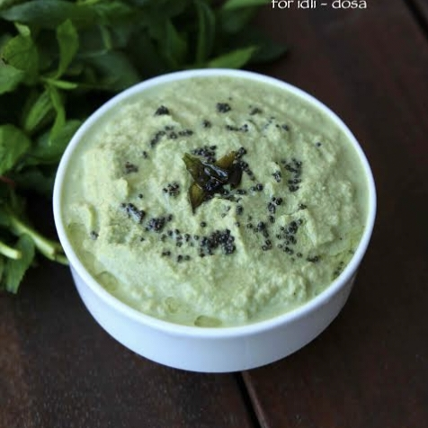

Ingredients:
- 1 cup fresh coriander leaves
- 1 green chili (adjust to taste)
- 1-inch ginger
- 2 tbsp lemon juice>
- ½ tsp cumin powder
- ½ tsp black salt (or regular salt)
- 2 tbsp curd (optional, for creaminess)
- Water as needed

Instructions:
- Wash and prep the coriander leaves properly, removing thick stems.
- Blend coriander, green chili, ginger, lemon juice, cumin powder, black salt, and curd (if using) into a smooth paste.
- Add water gradually to adjust the consistency.
- Taste and adjust seasoning if needed, adding more salt or lemon juice.
- Serve with parathas, chaats, or snacks. Store in the fridge for up to a week